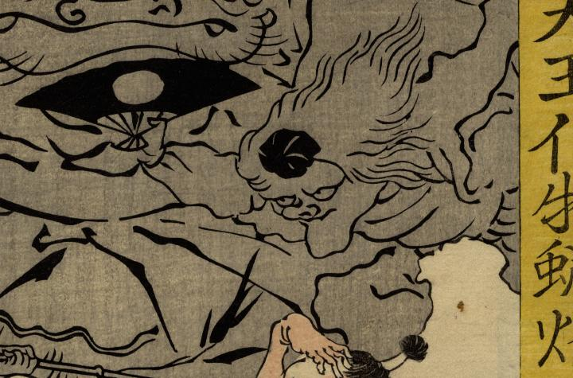

← 图鉴索引

扇をもって飛ぶ天狗。髪が長く、鼻頭と顎が伸びている。
出典：親書誌：U426_nichibunken_0268：四天王化物蝋燭；シテンノウ バケモノ ロウソク／日付：2014／資源識別子：U426_nichibunken_0268_0012_0000
Copyright (c)2010- International Research Center for Japanese Studies, Kyoto, Japan. All rights reserved.